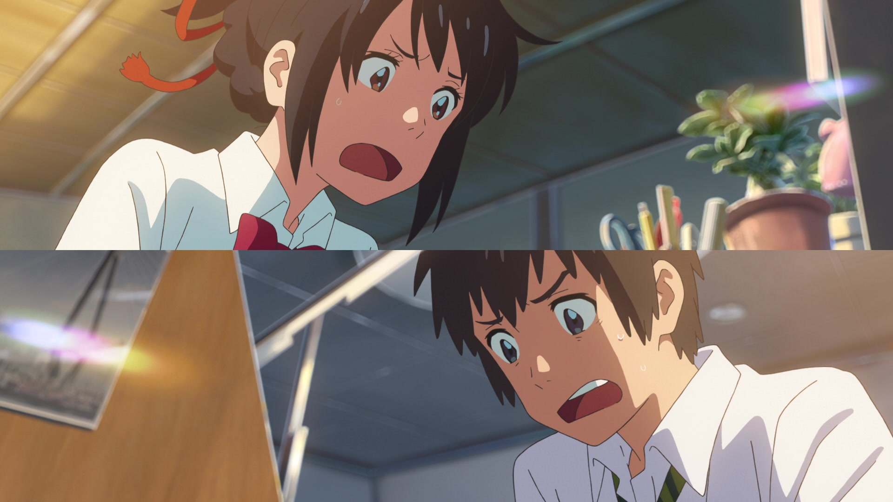

The Body Switch
Mitsuha, a high school girl from rural Itomori, wishes to live as a handsome Tokyo boy. Her wish mysteriously comes true when she begins switching bodies with Taki, a high school boy from Tokyo. They experience each other's lives, leaving notes to help navigate their temporary exchanges.
